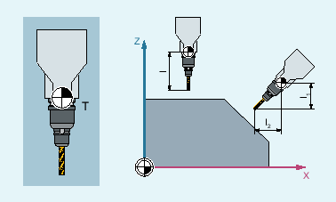

Mit veränderter Raumorientierung des Werkzeugträgers und damit des Werkzeugs ändern sich auch dessen Werkzeuglängenkomponenten:
T | Werkzeugträgerbezugspunkt |
I1, I2 | Werkzeuglängenkomponenten |
Nach Umrüsten, z. B. durch manuelle Einstellung oder Wechsel des Werkzeugträgers mit fester räumlicher Ausrichtung, müssen daher die Werkzeuglängenkomponenten neu ermittelt werden. Dazu dienen die Befehle der G-Gruppe 42 "Werkzeugträger".
Element | Typ | Bedeutung | |
|---|---|---|---|
| Adresse | Werkzeugträger anfordern | |
| Nummer des Werkzeugträgers | ||
| G-Befehl | Werkzeuglängenkomponenten aus der aktuellen Werkzeugträgerorientierung berechnen | |
| G-Befehl | Werkzeuglängenkomponenten aus der Orientierung des aktiven Frames bestimmen | |
| G-Befehl | Der Befehl TCOFRX/TCOFRY/TCOFRZ geht von einem in die entsprechende Richtung (X/Y/Z) orientierten Werkzeug aus und berechnet die Einstellwinkel des orientierbaren Werkzeugträgers, sodass das Werkzeug im aktiven Frame in dieselbe Richtung orientiert wird. | |
| Das in Z-Richtung orientierte Werkzeug wird so ausgerichtet, dass es im aktiven Frame ebenfalls in die Z-Richtung orientiert ist. | ||
| Das in Y-Richtung orientierte Werkzeug wird so ausgerichtet, dass es im aktiven Frame ebenfalls in die Y-Richtung orientiert ist. | ||
| Das in X-Richtung orientierte Werkzeug wird so ausgerichtet, dass es im aktiven Frame ebenfalls in die X-Richtung orientiert ist. | ||